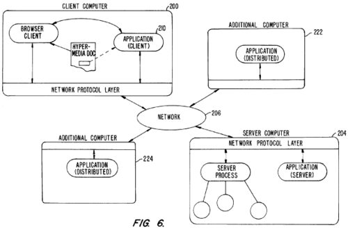
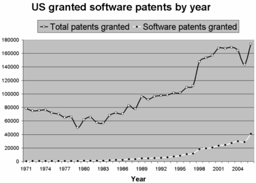

Eolas ataca de nuevo
En 2005 les contaba sobre el Caso Eolas:
Eolas significa “Embedded Objects Linked Across Systems” (objetos incrustados enlazados a lo largo de sistemas +/-). Pero en gaelico significa Sabiduría.
Los muchachos de Eolas tienen una patente desde 1994 que cubre la incrustación de objetos en browsers internet.
De acuerdo a la página de tecnología de Eolas la patente cubre, “los browsers para la web que soporten tecnologías populares como componentes ActiveX, applets Java y plug-ins para navegadores”.
Por supuesto una vez obtenida la patente fueron contra el pez mas grande, y las emprendieron primero contra Microsoft, ganando unos 500 millones de dolares…
Cuatro años se tomaron en Eolas para ir detrás de las otras empresas:
Es más o menos obvio que Eolas tiene en la mira a Macromedia (ahora Adobe) y a Sun. Incluso Firefox puede ser afectado. Esto es tan dañino que hasta el W3C habia decidido combatir a Eolas, solicitando la búsqueda masivas de pruebas de “prior art”, todo esto con el fin de que la oficina de patentes de Estados Unidos reconsiderara la patente entregada. Pero, aunque no sabemos en que va la cosa, Microsoft decidió que definitivamente los pluginsdeberán ser activados explícitamente por el usuario.
No sabemos el acuerdo al que llegaron Microsoft y Eolas, pero ahora la empresa anuncia que la demanda incluye a dos patentes de Eolas: la U.S. Patent No. 5,838,906 (‘906 Patent) y la U.S. Patent No. 7,599,985 (‘985 Patent).
La patente ‘906 fue el objeto de litigio contra Microsoft en 2004 y que terminó con el resultado de 565 millones de dolares a favor de Eolas. De acuerdo a Eolas la oficina de PAtentes de Estados Unidos ha confirmado la validez de la patente ‘906 en tres procesos distintos, incluyendo dos nuevos exámenes, el más reciente de los cuales concluyó en febrero de 2009.
De acuerdo a Eolas, la patente ‘985 es una continuación de la patente ‘906, y permite a los sitios webs agregar aplicaciones incrustadas totalemente interactivas a su oferta en linea a través del uso de los plug-ins y AJAX (asynchronous JavaScript and XML) como técnica de desarrollo web. La patente ‘985 fue otorgada en octubre de 2009.
Esta vez Eolas está demandando, entre otros a: Adobe, Amazon, Go Daddy, Google, Sun Microsystems Inc. (por lo tanto a Oracle), Yahoo, y Youtube.
El diagrama de abajo corresponde a un esquema de como opera la patente ‘985 de octubre de 2009:

Como pueden apreciar practicamente toda la dinámica de la Web 2.0 y de Ajax está cubierta por esta patente.
Un resumen de la patente la describe así:
Un sistema que permite al usuario de un programa navegador en un computador conectado a un hipermedio abierto y distribuido, acceder y ejecutar un programa objeto incrustado. El programa objeto es incrustado en un documento hipermedia de la misma forma que los objetos de datos.
El usuario puede selecciona el programa objeto desde la pantalla. Una vez seleccionado el programa se ejecuta en el computador del usuario (cliente) o puede ejecutar en un servidor remoto o computadores remotos adicionales organizados como procesadores distribuidos.
Después de lanzar el programa objeto, el usuario es capaz de interactuar con el objeto dado que la invención provee de la comunicación entre procesos necesaria entre la aplicación el programa objeto y el programa navegador.
Esta patente fue solicitada en 2002.
Esto de las patentes de software tiene muchos paralelos con la guerra fría, y la amenaza de las armas nucleares, las potencias se armaron con patentes de modo de asegurar la destrucción mutua (ya saben, yo tengo esta patente, pero no te demando si tu no me demandas por esa otra patente que tu tienes). En general las empresas grandes tienen las patentes en su arsenal pero tienen miedo de usarlas para no desatar una [apocalipsis de las patentes](http://www.codinghorror.com/blog/archives/000902.html.
Pero no contaban con que un chico se hiciera con una patente también, es como el caso de Irán, o Corea del Norte desarrollando armas nucleares. Solo que en el caso de las patentes el chico ya ha lanzado las bombas.
